6. Posudzovanie ŽoP
Posudzovanie ŽoP začína Nastavením administrácie ŽoP a pridelením spracovateľov ŽoP na výzve alebo priamom vyzvaní podľa podkapitoly 3.8).
6.1) Pridelenie ŽoP spracovateľom
Na pridelenie ŽoP spracovateľom potrebujeme pracovnú pozíciu Priraďovateľ ŽoP.
V ľavom paneli klikneme na záložku ŽoP -> Všetky ŽoP. V zozname klikneme na ŽoP, ktorú chceme posudzovať.
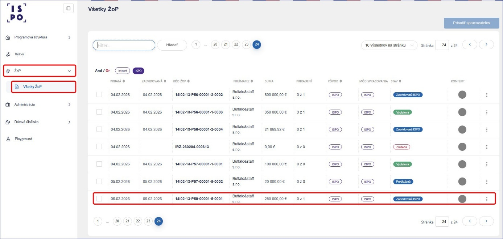
V detaile ŽoP prejdeme do sekcie Pridelenie a klikneme na tlačidlo Priradiť spracovateľov.
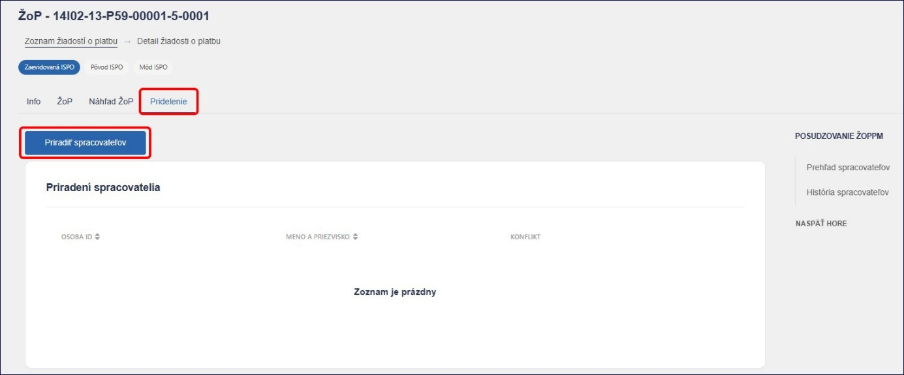
Otvorí sa obrazovka so zoznamom všetkých spracovateľov, ktorí boli priradení na výzve podľa podkapitoly 3.8.5). Kliknutím na tlačidlo Prideliť vyberieme tých, ktorých chceme, aby posudzovali danú žiadosť o platbu. Pre korektné posúdenie potrebujeme vybrať aspoň jednu osobu na vytvorenie registratúrneho záznamu, aspoň jedného kontrolóra úplnosti a aspoň jedného administratívneho finančného kontrolóra.
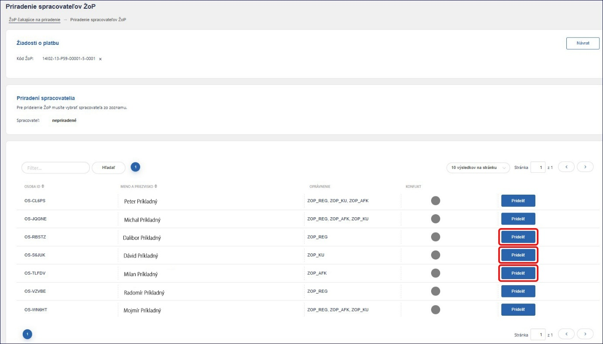
6.2) Registratúrny záznam ŽoP
Registratúrny záznam ŽoP vieme zaevidovať s pracovnou pozíciou Editor registratúrneho záznamu ŽOP po tom, ako sme boli pridelení ako spracovateľ na danú ŽoP.
V ľavom paneli klikneme na záložku ŽoP -> Moje ŽoP, v ktorej vidíme zoznam ŽoP, na ktoré sme boli pridelení ako spracovateľ. Ak je ŽoP v stave Zaevidovaná v ISPO, nemá zaevidovaný registratúrny záznam.
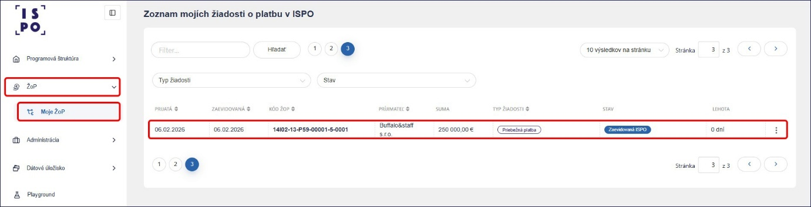
Registratúrny záznam vytvárame vtedy, ak sme prijali žiadateľom podpísaný Sumár ŽoP PDF v elektronickej alebo listinnej podobe. V detaile ŽoP prejdeme do sekcie Registratúrny záznam. Pre zaevidovanie klikneme na tlačidlo Upraviť. Vyplníme polia ako Spisová značka, Dátum prijatia, Číslo registratúrneho záznamu a Link na RZ v registratúre a klikneme na tlačidlo Uložiť. Žiadosť zmení stav zo Zaevidovaná ISPO na Predložená.
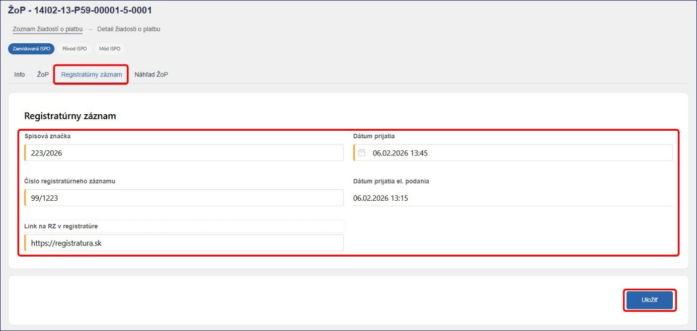
6.3) Kontrola úplnosti
Kontrolu úplnosti môžeme vykonať s pracovnou pozíciou Kontrolór úplnosti ŽoP ak je ŽoP v stave Predložená. Klikneme na ŽoP, ktorú ideme posudzovať. V záložkách Info, ŽoP a Náhľad ŽoP môžeme vidieť údaje zo žiadosti. V záložke Kontrola úplnosti stiahneme vzorový kontrolný zoznam pre kontrolu úplnosti a vyplníme ho.
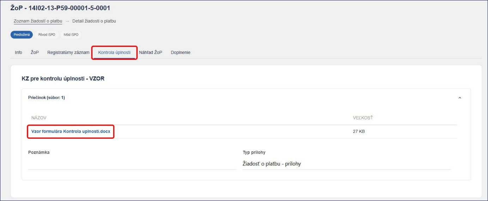
Vyplnený kontrolný zoznam nahráme v časti Nahrať kontrolný zoznam pre kontrolu úplnosti ako prílohu a nahratie potvrdíme tlačidlom Nahrať tlačivo pre kontrolu úplnosti. Kontrolu úplnosti potvrdíme tlačidlom Potvrdzujem že žiadosť o platbu je úplná. V prípade, že chceme kontrolu úplnosti preskočiť, môžeme kliknúť na tlačidlo Preskočiť kontrolu úplnosti. Po vykonaní kontroly bude mať žiadosť stav Dokončená.
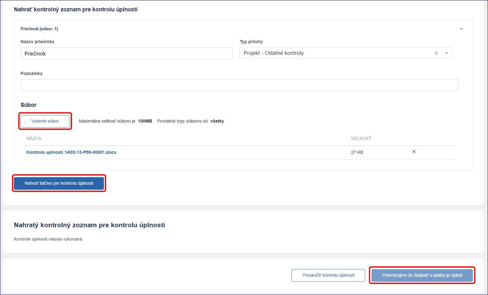
6.4) Finančná kontrola na mieste
Finančnú kontrolu na mieste môžeme vykonať s pracovnou pozíciou Administratívny finančný kontrolór ŽoP ak je ŽoP v stave Dokončená. Klikneme na ŽoP, ktorú ideme posudzovať. V záložkách Info, ŽoP a Náhľad ŽoP môžeme vidieť údaje zo žiadosti. V záložke Finančná kontrola na mieste stiahneme vzorový kontrolný zoznam pre finančnú kontrolu na mieste a vyplníme ho.
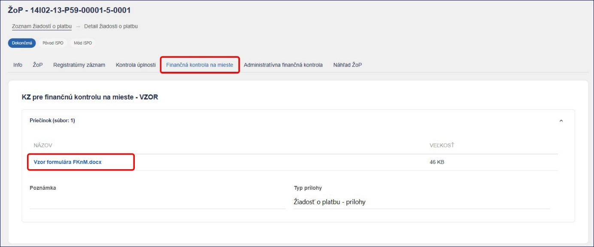
Vyplnený kontrolný zoznam nahráme v časti Nahrať kontrolný zoznam pre finančnú kontrolu na mieste ako prílohu a nahratie potvrdíme tlačidlom Nahrať tlačivo pre finančnú kontrolu na mieste. Kontrolu potvrdíme tlačidlom Potvrdzujem finančnú kontrolu na mieste. V prípade, že chceme finančnú kontrolu na mieste preskočiť, môžeme kliknúť na tlačidlo Preskočiť finančnú kontrolu na mieste – nebola vykonaná. Po vykonaní kontroly bude mať žiadosť stav Finančná kontrola.
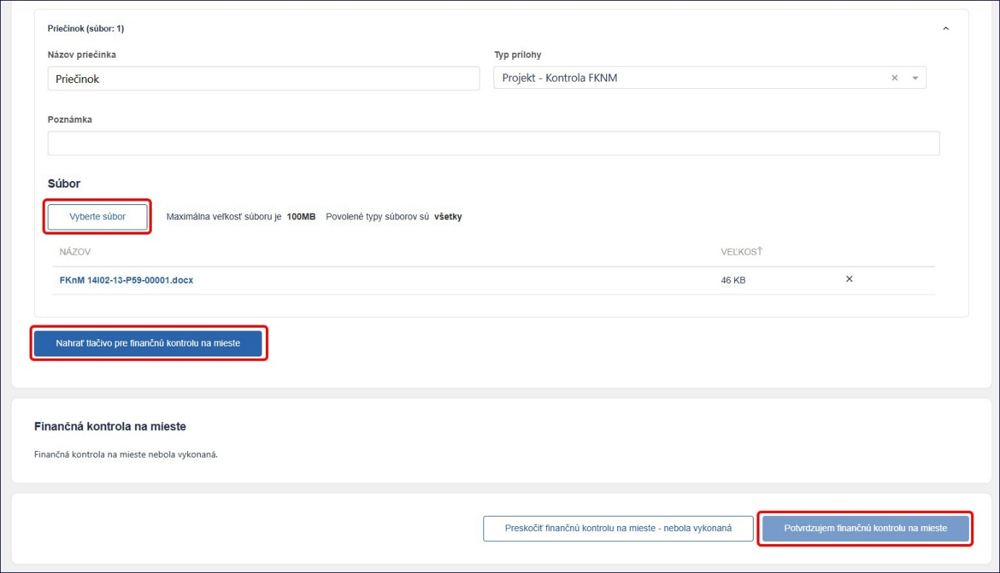
6.5) Administratívna finančná kontrola
Administratívnu finančnú kontrolu môžeme vykonať s pracovnou pozíciou Administratívny finančný kontrolór ŽoP ak je ŽoP v stave Finančná kontrola. Klikneme na ŽoP, ktorú ideme posudzovať. V záložkách Info, ŽoP a Náhľad ŽoP môžeme vidieť údaje zo žiadosti. V záložke Administratívna finančná kontrola stiahneme vzorový kontrolný zoznam pre administratívnu finančnú kontrolu a vyplníme ho.
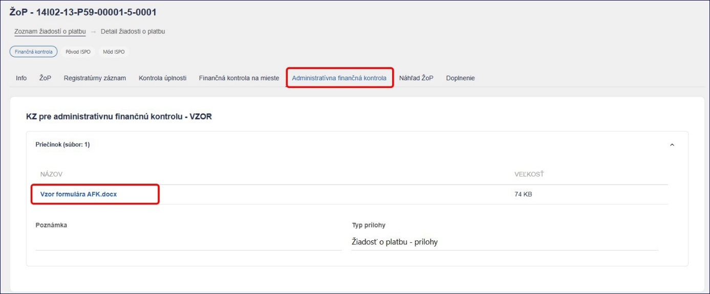
Vyplnený kontrolný zoznam nahráme v časti Nahrať kontrolný zoznam pre administratívnu finančnú kontrolu ako prílohu a nahratie potvrdíme tlačidlom Nahrať tlačivo pre administratívnu finančnú kontrolu.
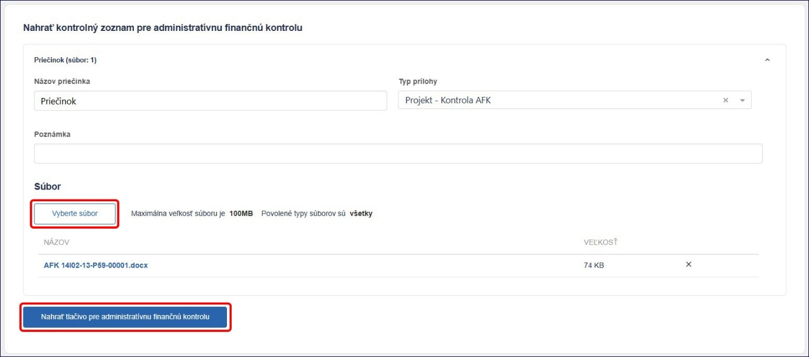
Následne postupujeme v závislosti od typu ŽoP.
6.5.1) Postup pre schválenie typov ŽoP:
-
Poskytnutie zálohy
-
Vrátenie
Ak sme posudzovali typ ŽoP Poskytnutie zálohy alebo Vrátenie, po nahratí kontrolného zoznamu pre administratívnu finančnú kontrolu sa sprístupní tlačidlo Schváliť ŽoP, čím sa žiadosť dostane do stavu Schválená.
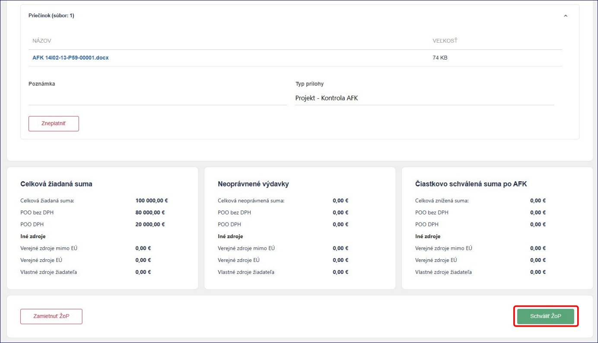
Poznámka: Ak prijímateľovi pri poskytnutí zálohy nechceme schváliť celú požadovanú sumu, upravíme ju cez priame doplnenie, ktoré opisujeme v podkapitole 6.6).
6.5.2) Postup pre schválenie typov ŽoP:
-
Priebežná platba / Refundácia
-
Zúčtovanie zálohy
-
Poskytnutie predfinancovania
-
Zúčtovanie predfinancovania
Ak sme posudzovali typ ŽoP Priebežná platba, Zúčtovanie zálohy, Poskytnutie predfinancovania alebo Zúčtovanie predfinancovania, po nahratí kontrolného zoznamu pre administratívnu finančnú kontrolu sa sprístupní časť Zoznam výdavkov ŽoP. V tomto zozname sa nachádzajú výdavky tak, ako ich uviedol prijímateľ. V prípade, že sme počas posudzovania ŽoP neidentifikovali neoprávnené výdavky, klikneme na tlačidlo Schváliť.
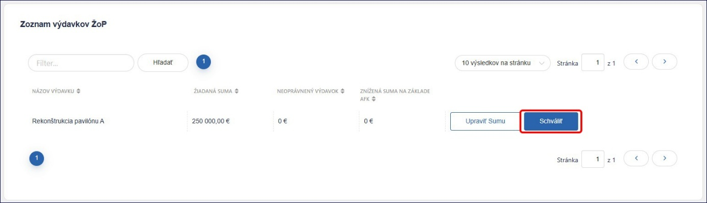
Tým schválime celú čiastku uvedenú prijímateľom. Následne sa sprístupní aj zelené tlačidlo Schváliť ŽoP a po kliknutí naň sa žiadosť dostane do stavu Schválená.
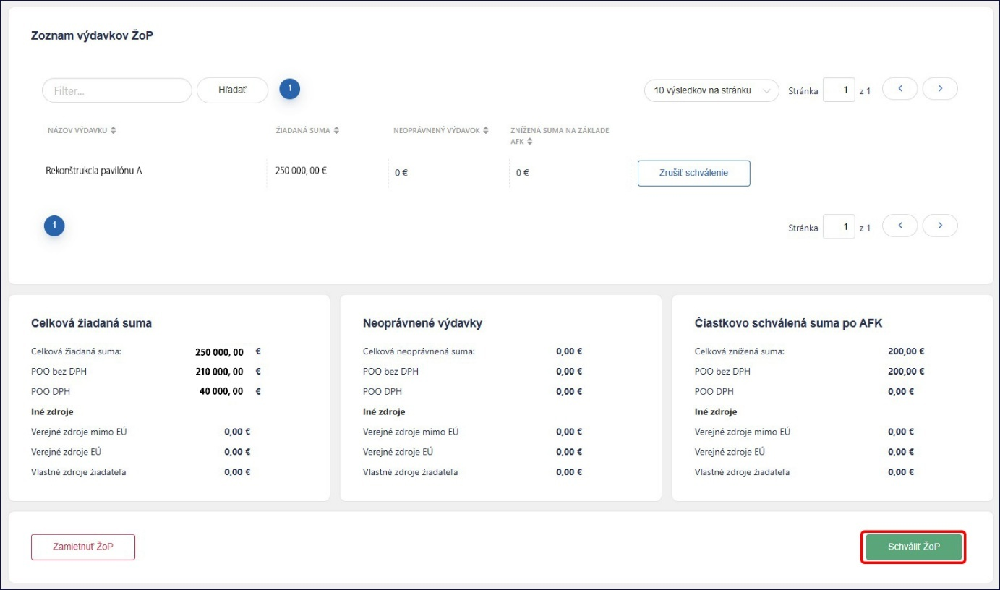
V prípade, že sme identifikovali neoprávnené výdavky, v zozname výdavkom klikneme na tlačidlo Upraviť sumu.
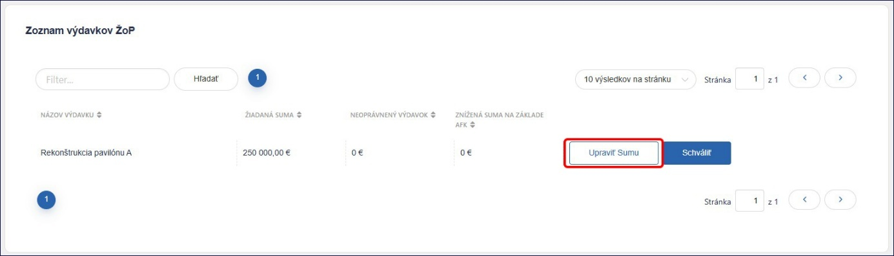
V modálnom okne, v poliach pre sumy, uvedieme sumy po znížení o neoprávnené výdavky. Zároveň v poli Dôvod môžeme uviesť internú informáciu prečo boli sumy znížené. Následne klikneme na tlačidlo Potvrdiť.
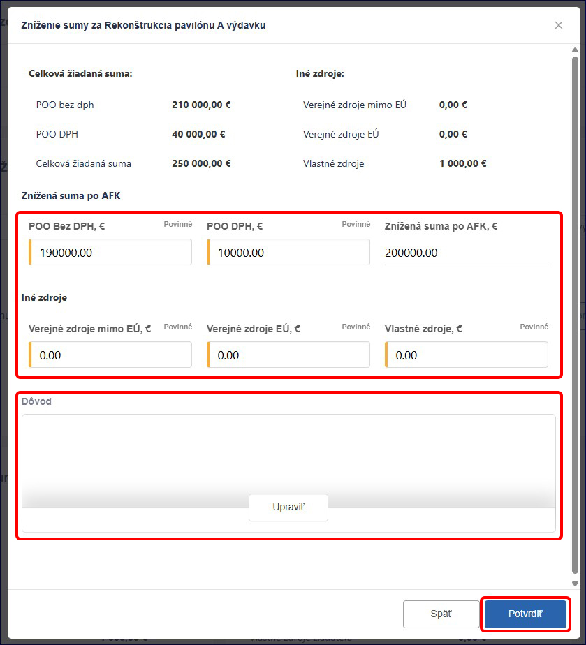
Pri výdavku, v tabuľke, uvidíme upravené sumy a klikneme na tlačidlo Schváliť. Zobrazí sa zoznam súm, ako Celková žiadaná suma, Neoprávnené výdavky a Čiastkovo schválená suma po AFK, kde môžeme overiť správnosť upravených súm. Následne sa sprístupní zelené tlačidlo Schváliť ŽoP, čím sa žiadosť dostane do stavu Schválená so zníženou sumou.
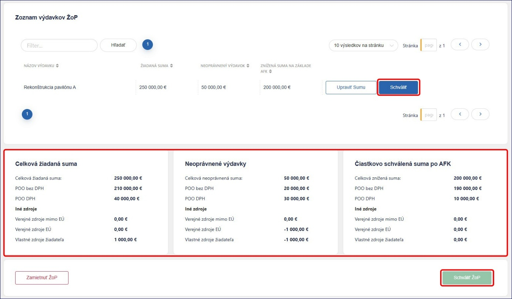
Poznámka: Ak sa v zozname výdavkov nachádza viac ako jeden výdavok a niektorý z výdavkov neschválime, žiadosť sa dostane do stavu Čiastočne schválená.
6.5.3) Po schválení ŽoP typov Priebežná platba, Poskytnutie zálohy a Poskytnutie predfinancovania sa v danej ŽoP v časti Info, v spodnej časti obrazovky, sprístupní tlačidlo Zaevidovať údaje o vyplatení.
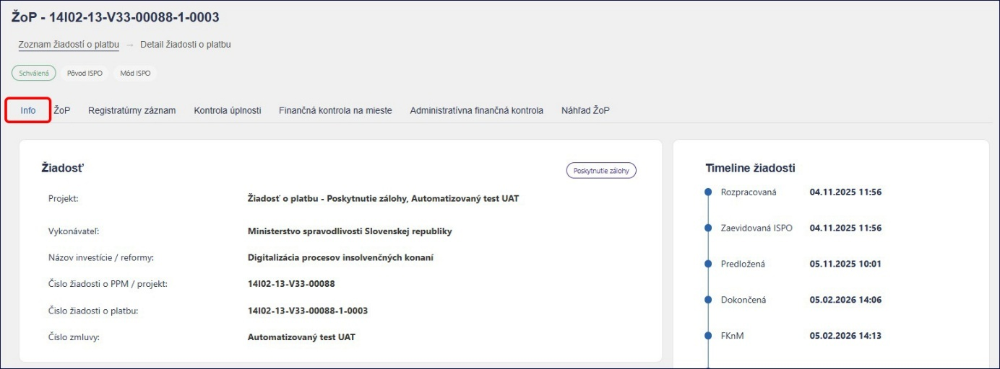
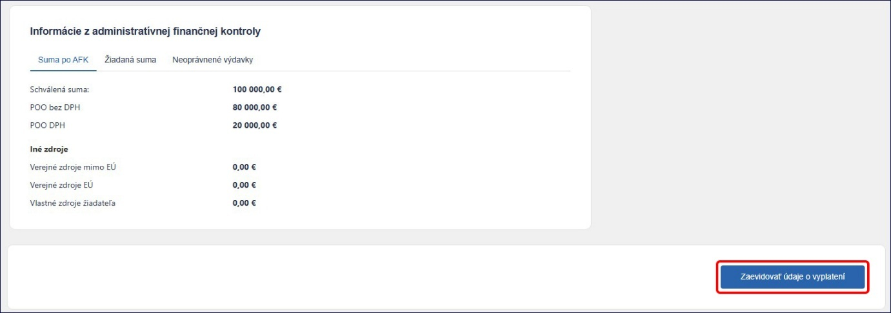
Poznámka: Údaje o vyplatení zaevidujeme až po tom, ako vykonávateľ vyplatí ŽoP prijímateľovi.
V modálnom okne sa automaticky vyplnia sumy schválené v ŽoP, ktoré skontrolujeme. Skontrolujeme aj IBAN, ktorý sa automaticky doťahuje zo ŽoP. Vyplníme Dátum vyplatenia ŽoP. Následne klikneme na tlačidlo Potvrdiť.
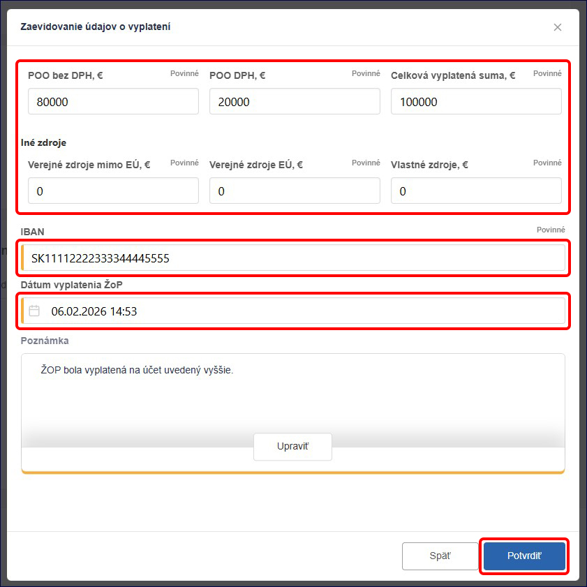
Takáto ŽoP sa dostane do stavu Vyplatená, pričom prijímateľ na Portáli ISPO už vie, že môže podávať Zúčtovacie ŽoP.
6.6) Doplnenie ŽoP
Doplnenie ŽoP môžeme vykonať počas kontroly úplnosti, s pracovnou pozíciou Kontrolór úplnosti ŽoP, ak je ŽoP v stave Predložená alebo počas administratívnej finančnej kontroly, s pracovnou pozíciou Administratívny finančný kontrolór ŽoP, ak je ŽoP v stave Finančná kontrola.
6.6.1) Po kliknutí na konkrétnu ŽoP prejdeme do záložky Doplnenie. Otvorí sa zoznam doplnení na danej ŽoP. Ak ešte nebolo vykonané žiadne doplnenie, zoznam je prázdny.
Poznáme dva typy doplnenia a to Nové priame doplnenie a Nové doplnenie.
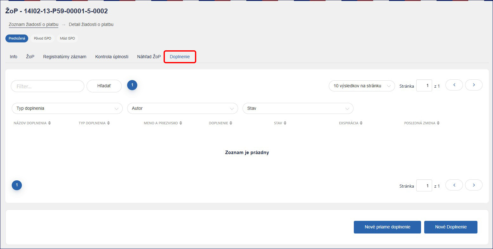
Nové priame doplnenie je typ doplnenia, kedy sme chýbajúce údaje od žiadateľa obdržali mimo ISPO, napr. cez e-mail a do ŽoP tieto údaje chceme zapracovať. Klikneme na tlačidlo Nové priame doplnenie.
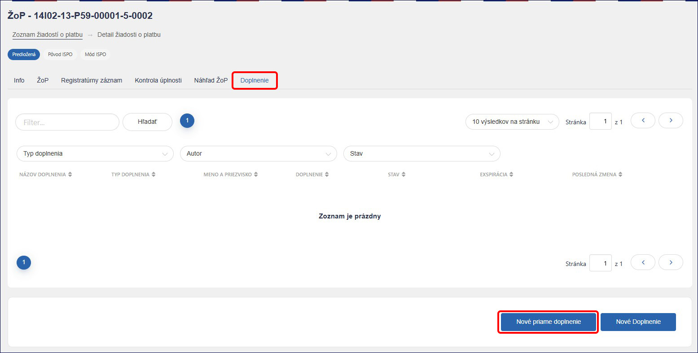
Uvedieme Názov doplnenia a klikneme na tlačidlo Vytvoriť doplnenie.
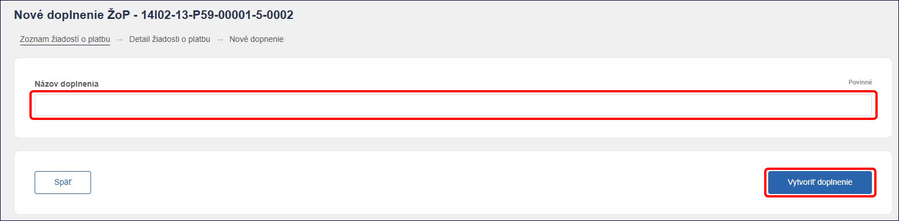
6.6.2) Po vytvorení doplnenia sa otvorí detail doplnenia, v ktorom môžeme zmeniť názov a doplniť údaje do sekcie Suma zálohovej platby alebo Vykázané výdavky – zoznam dokladov (v závislosti od typu ŽoP) a Dodatočné prílohy žiadosti o platbu.
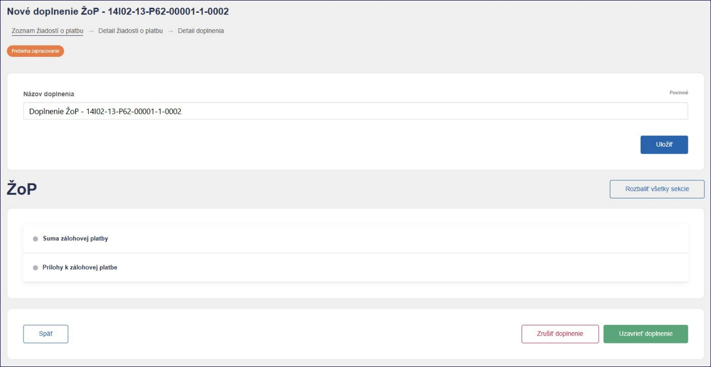
V sekcii Suma zálohovej platby môžeme upraviť hodnoty Sumy z Plánu obnovy bez DPH,€ a Čiastky DPH z Plánu obnovy, € pričom vždy vidíme aktuálnu hodnotu uvedenú žiadateľom v pôvodnej žiadosti a nami upravenú hodnotu. Úpravu potvrdíme tlačidlom Uložiť.
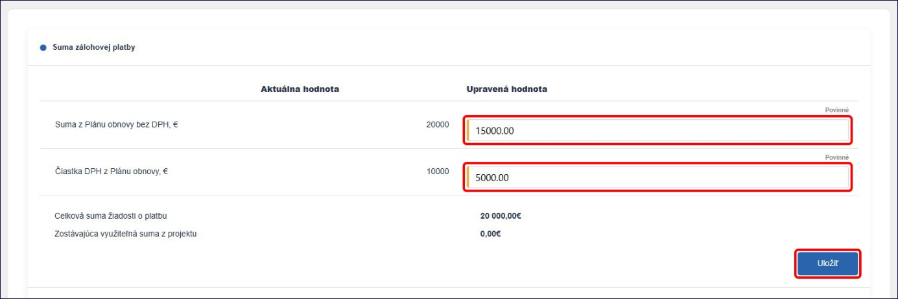
V sekcii Vykázané výdavky – zoznam dokladov v časti Upravená hodnota môžeme upravovať výdavky. Premenovať alebo Odstrániť výdavok môžeme kliknutím na tlačidlo Tri bodky a vybrať možnosť. Kliknutím na daný výdavok sa dostaneme na zoznam dokladov. Pomocou tlačidla Pridať výdavok pridáme nový výdavok.
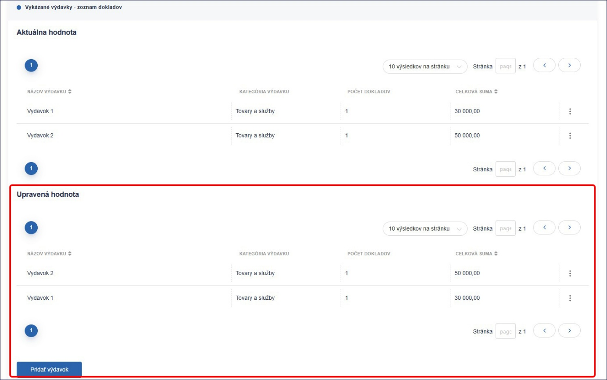
Po kliknutí na daný výdavok alebo po vytvorení nového výdavku sa dostaneme na zoznam dokladov pod výdavkom, ktoré môžeme pridať, editovať alebo odstrániť. Nový doklad môžeme pridať kliknutím na tlačidlo Nový doklad k výdavku.
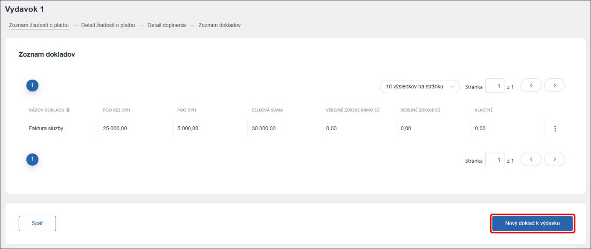
V nasledujúcej obrazovke pre zadávanie údajov nového dokladu nahráme prílohu k dokladu a vyplníme polia ako Názov dokladu, Číslo dokladu a Dátum úhrady.
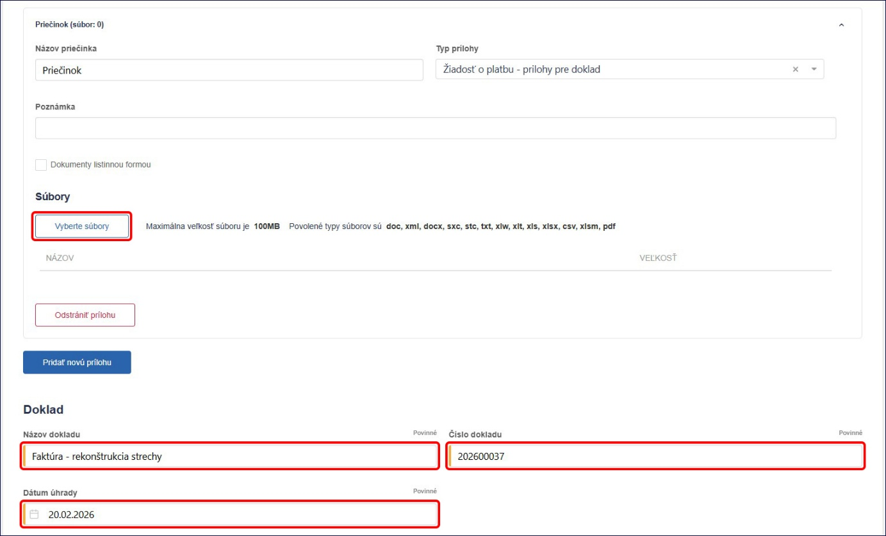
Následne zvolíme typ výdavku z možností Mzdy, Tovary a služby a Iné. Ak uvedieme sumy do polí POO bez dph a POO dph, tak pole Celková suma sa vypočíta automaticky. Následne vyplníme polia ako Verejné zdroje mimo EÚ, Verejné zdroje EÚ a Vlastné zdroje a to aj v prípade, že sú nulové.
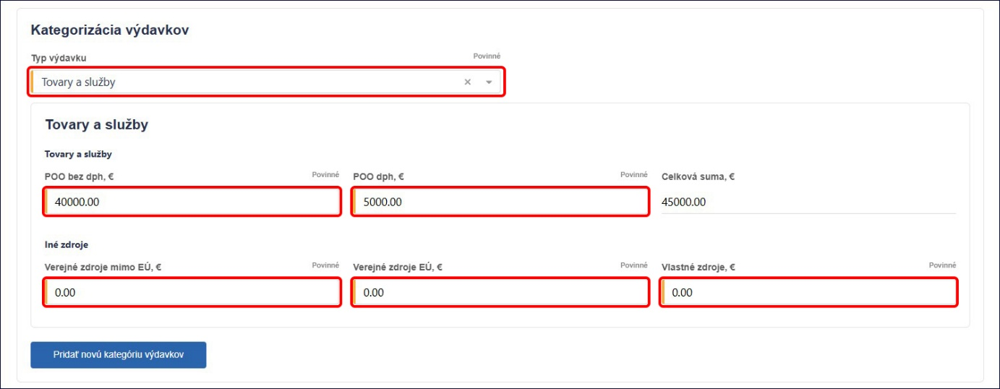
Môžeme tiež vyplniť údaje k zmluve, ak sú relevantné.
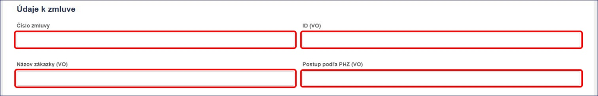
Do poľa Dodávateľ uvedieme názov alebo IČO dodávateľa. Systém napojený na RPO v zozname vyhľadá požadovanú organizáciu, na ktorú klikneme. Ak systém dodávateľa nevyhľadá alebo je dodávateľ zahraničný, vytvoríme ho kliknutím na tlačidlo + Nový dodávateľ. Po pridaní dodávateľa sa sprístupní pole pre zadanie subdodávateľa.
Pre pridanie dokladu klikneme na tlačidlo Uložiť.
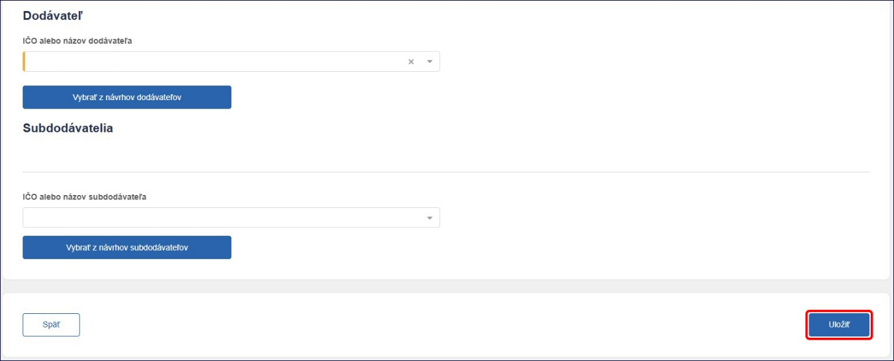
Pokračovať môžeme pridaním ďalších dokladov alebo cez tlačidlo Späť sa môžeme vrátiť na zoznam výdavkov. Doplnením alebo upravením dokladu sa upraví aj hodnota výdavku. Ak sme dokončili úpravu sekcie výdavkov, pokračovať môžeme na sekciu Dodatočné prílohy žiadosti o platbu, v ktorej rovnako môžeme porovnať aktuálnu hodnotu a doplniť prílohy do časti upravená hodnota.
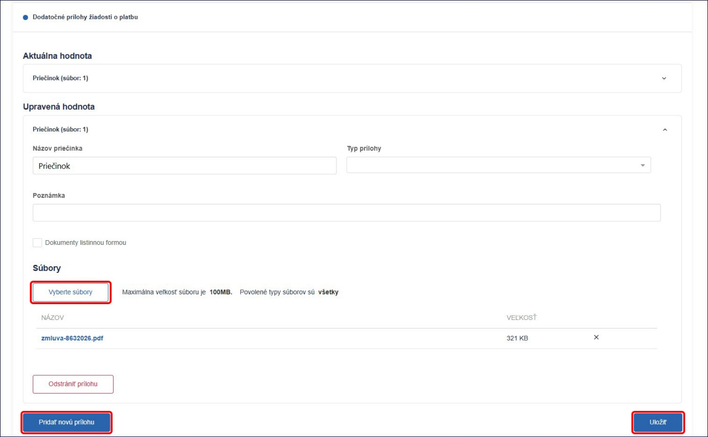
Ak sme zapracovali všetky doplnené údaje, môžeme doplnenie ukončiť tlačidlom Uzavrieť doplnenie. V prípade, že sme toto doplnenie vytvorili omylom, alebo už nie je relevantné, môžeme ho zrušiť.
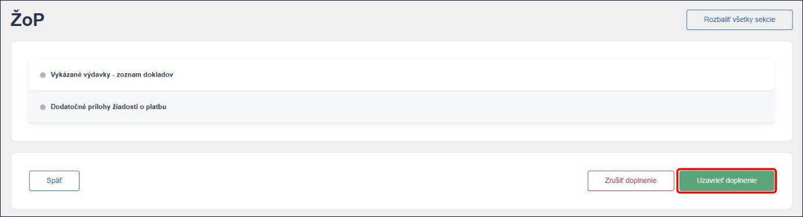
6.6.3) Nové doplnenie je typ doplnenia, v ktorom najskôr vyšpecifikujeme chýbajúce údaje ŽoP a vyzveme žiadateľa cez Portál ISPO, aby ich doplnil. Žiadateľ ich doplní cez Portál ISPO a odošle späť. Následne jeho odpoveď zapracujeme do ŽoP. Klikneme na tlačidlo Nové doplnenie.
Po kliknutí na konkrétnu ŽoP prejdeme do záložky Doplnenie. Klikneme na tlačidlo Nové doplnenie.
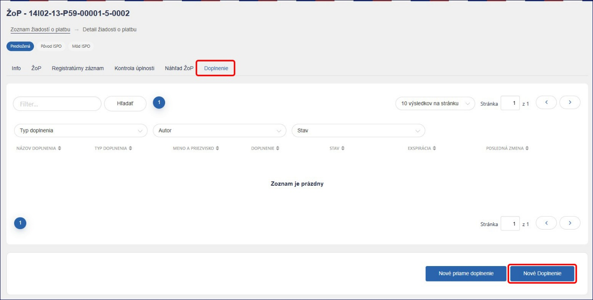
Vyplníme Názov doplnenia, napr. Výzva na doplnenie ŽoP - 14I02-13-V03-00005-5-0001. Dátum exspirácie je prednastavený na 10 dní, ale môžeme ho zmeniť. Následne klikneme na pole Nová požiadavka.
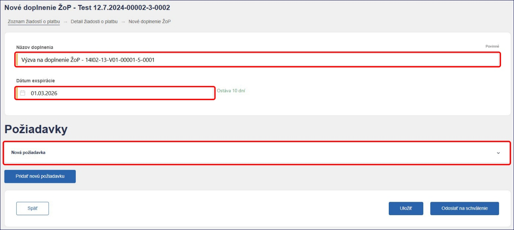
Otvoria sa ďalšie polia ako Sekcia, Názov požiadavky, Detail požiadavky a možnosť pridať prílohu.
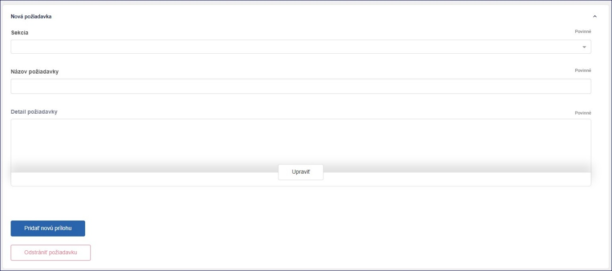
V poli Sekcia máme možnosť vybrať Suma zálohovej platby alebo Vykázané výdavky – zoznam dokladov (v závislosti od typu ŽoP) a Dodatočné prílohy žiadosti o platbu. Vyberieme jednu z možností, napr. Vykázané výdavky – zoznam dokladov.
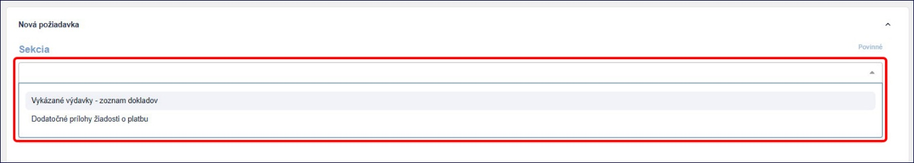
Následne vyplníme Názov požiadavky a Detail požiadavky, prípadne nahráme vzorovú prílohu. Kliknutím na tlačidlo Pridať novú požiadavku môžeme nadefinovať ďalšiu požiadavku.
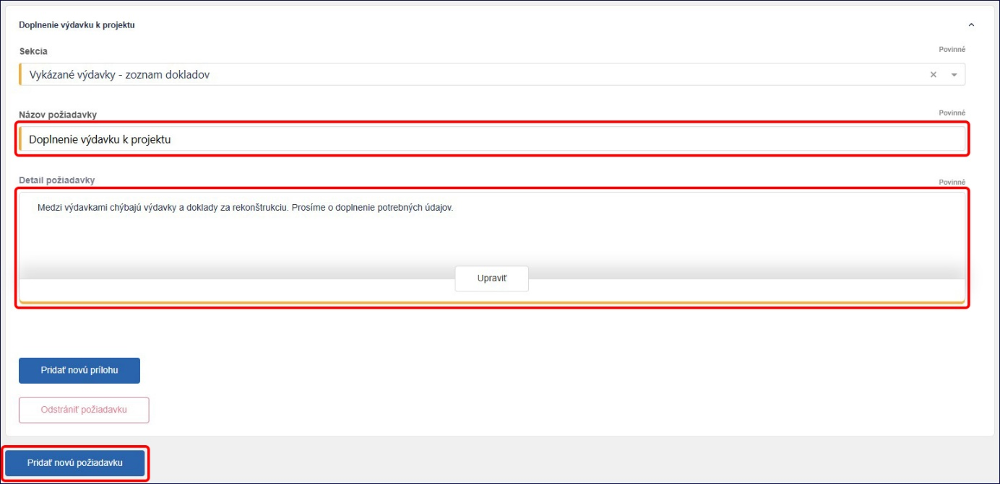
Výzvu na doplnenie môžeme uložiť a pokračovať v práci neskôr alebo ju môžeme odoslať na schválenie kliknutím na tlačidlo Odoslať na schválenie. Zo zoznamu vyberieme osobu s pracovnou pozíciou Schvaľovateľ doplnenia ŽoP, ktorá výzvu na doplnenie schváli a odošle žiadateľovi, prípadne vráti späť na dopracovanie.
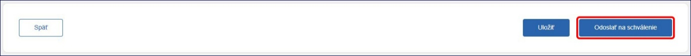
Po odoslaní sa doplneniu vytvorí špecifický kód zložený z piatich automaticky generovaných znakov, napr. L5Y5W. Takéto doplnenie je v stave Čaká na odpoveď.
Náhľad výzvy na doplnenie na Portáli ISPO.
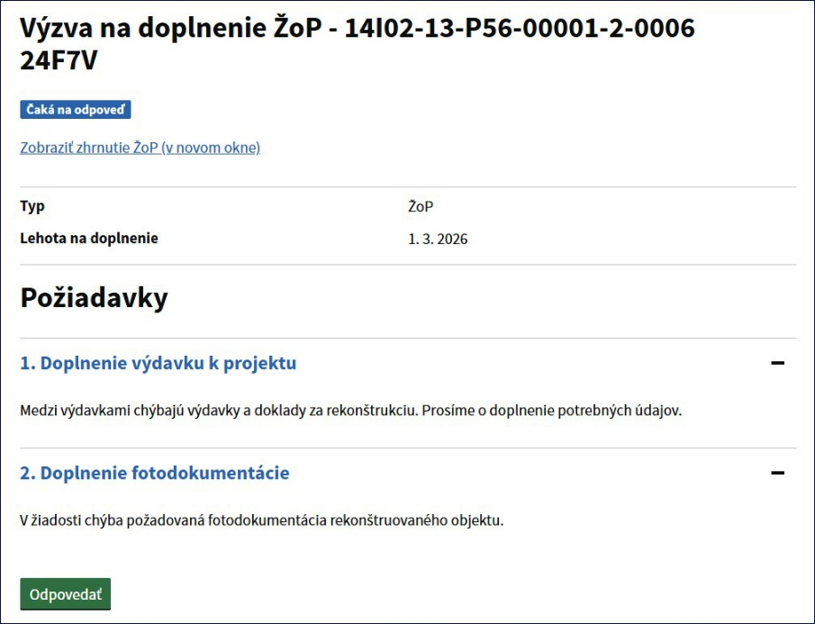
Keď žiadateľ odpovie na naše požiadavky, doplnenie je v stave Zodpovedaná. Klikneme na danú ŽoP a v záložke Doplnenie v zozname klikneme na dané doplnenie.
V prvej časti zodpovedaného doplnenia vidíme našu požiadavku a v druhej časti odpoveď žiadateľa.
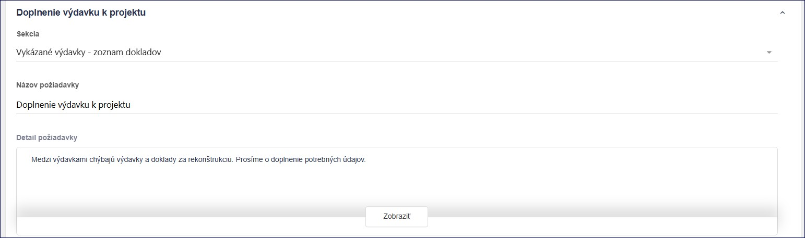
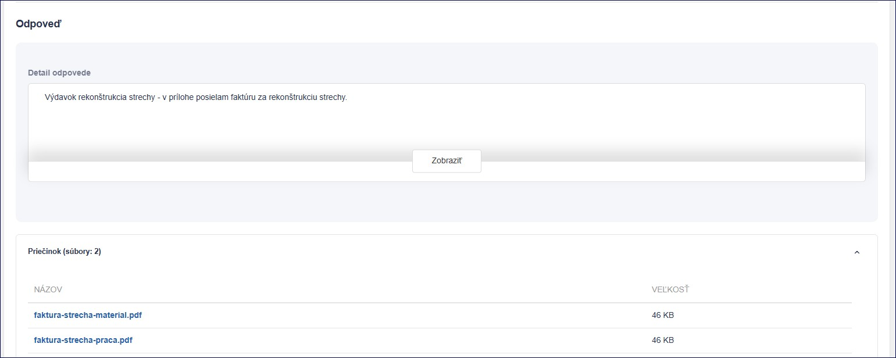
Ak je odpoveď od žiadateľa dostatočná, musíme ju zapracovať do doplnenia. Klikneme na tlačidlo Zapracovať doplnenie.
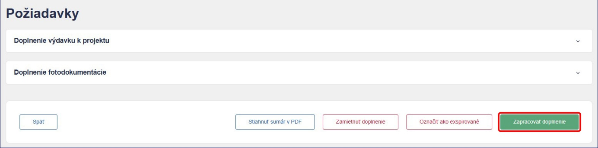
Následne doplníme údaje do požadovaných sekcií tak ako ich opisujeme v bode 6.6.2) pričom údaje čerpáme z odpovede žiadateľa. Po zapracovaní odpovedí žiadateľa odošleme doplnenie na kontrolu a schválenie tlačidlom Odoslať na schválenie. Zo zoznamu vyberieme osobu, ktorá by mala kontrolu a schválenie vykonať.
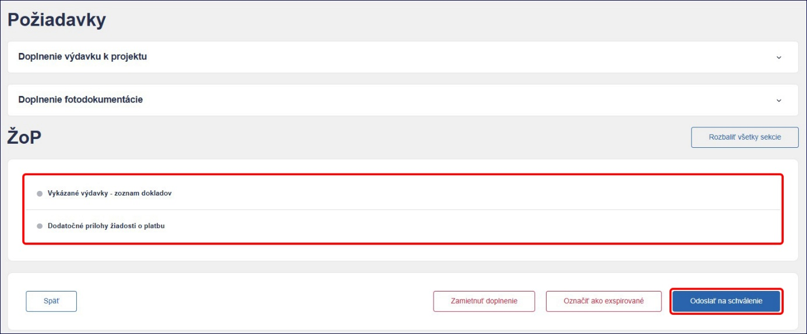
Osoba vykonávajúca kontrolu doplnených údajov môže toto doplnenie vrátiť späť alebo kliknutím na tlačidlo Schváliť a odoslať uzavrieť toto doplnenie ako dokončené. Takto dokončené doplnenie získa stav Vyriešená.
V prípade, že odpoveď žiadateľa nebola dostatočná alebo chybná, doplnenie môžeme Zamietnuť. V prípade, že žiadateľ neodpovedal do lehoty, ktorú sme uviedli, môžeme doplnenie Označiť ako exspirované.